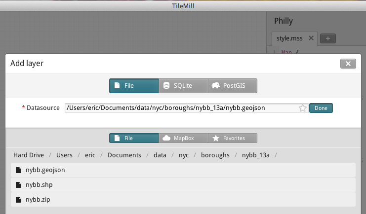
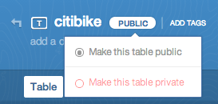

GeoJSON
Where do file formats come from?
Where does GeoJSON work?

GeoJSON is readable
Shapefiles are difficult to read
How to write a shapefile:

{
"type": "FeatureCollection",
"features": [ ... ]
}
{
"type": "FeatureCollection",
"features": [
{ ... },
{ ... },
{ ... }
]
}
{
"type": "FeatureCollection",
"features": [
{
"type": "Feature",
"properties": {
"id": 1,
"Name": "My House",
"City": "White Hall",
"Comments": "It's OK"
},
"geometry": {
"type": "Point",
"coordinates": [-76.596, 39.684]
}
}
]
}
Making maps with CartoDB
Tables
Where you import / edit / analyze your data
Visualizations
Where you make public map views of your tables

SQL